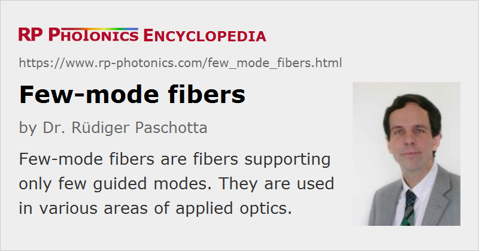

Few-mode Fibers
Acronym: FMF
Definition: fibers supporting only few guided modes
More general term: optical fibers
German: Fasern mit wenigen Moden
Categories: fiber optics and waveguides, lightwave communications
How to cite the article; suggest additional literature
Author: Dr. Rüdiger Paschotta
There is the common distinction between single-mode fibers, supporting only one guided mode per polarization direction, and multimode fibers, supporting more than one guided mode. For multimode fibers supporting only a relatively small number of guided modes – for example, around 10 to 20, or sometimes only 2 or 6, the term few-mode fibers is commonly used.
The guided modes are usually characterized as LP modes and counted as those, ignoring degeneracies. For example, a six-mode fiber may have the LP01 (fundamental mode), LP11, LP21, LP02, LP31 and LP12. As all modes with non-zero l exist with two different orientations, the full number of spatial modes, counting separately the different orientations, is actually 2 + 4 · 2 = 10. Also counting polarization directions, one would arrive at the total number of modes of 20. Similarly, a two-mode fiber (with LP01 and LP11) actually exhibits 6 different modes considering degeneracies and polarization.
In some cases, the term few-mode fibers is used for large mode area fibers which one tries to use like single-mode fibers, although they support a couple of higher-order modes. By going slightly into the multimode regime, one can achieve significantly higher effective mode areas and correspondingly weaker fiber nonlinearities. The somewhat increased number of modes is not exploited, but only tolerated, and can indeed have detrimental side effects. For example, there are nonlinear modal instabilities in high-power fiber amplifiers which can be quite disturbing.
Fibers with a rather small or sometimes a somewhat larger number of guided modes – for example, between 10 and 20 – are of interest for applications like optical fiber communications with mode division multiplexing, a kind of space division multiplexing. Here, one utilizes multiple modes for increasing the transmission capacity, but the used techniques would not work well if the fiber would support a too large number of modes – for example, because that would lead to increased mode coupling. (The sensitivity of such a system to mode coupling effects actually depends on the used operation principles; for example, it is relatively weak when an advanced MIMO technique [7] is used.) Some of these fibers are step-index fibers, but there is often a preference for graded-index fibers with a parabolic index profile, exhibiting a much lower differential mode delay (far below 1 ps/m) than step-index fibers.
In some cases, few-mode fibers are considered for telecom applications in an operation mode where only the fundamental mode is exploited; in comparison to single-mode fibers, one benefits from the increased effective mode area [3].
Typically, the guided modes of a few-mode fiber exhibit substantially different phase constants (β values) and thus effective refractive indices, while the group velocities may or may not substantially differ, depending on the fiber design.
In contrast to single-mode fibers, in few-mode fibers one can have intermodal nonlinear effects such as cross-phase modulation and parametric amplification, and also those involving nonlinearities with a delayed nonlinear response such as stimulated Brillouin scattering. The tendency for such phenomena can be increased in fibers with low differential mode delay.
Few-mode fibers may also be used for fiber-optic sensors, where the presence of multiple guided modes is utilized for achieving multi-parameter sensing [15].
Active Few-mode Fibers
One can also make active (and rare-earth doped) few-mode fibers, with which one can realize few-mode fiber amplifiers [2, 5, 6, 9, 17, 19]. It is then possible to amplify all modes of such a fiber simultaneously. However, there might be problems with mode-dependent gain: the amplifier gain may be significantly different for the different guided modes, which can result in substantial power differences in case of high-gain amplification. Fiber designs can be optimized for minimum differential modal gain (DMG) [5]; it can also be helpful to employ cladding pumping [14] . Another approach is to use re-configurable multimode pumps, where the distribution of pump power over the pump modes is optimized for minimum mode-dependent gain.
Questions and Comments from Users
Here you can submit questions and comments. As far as they get accepted by the author, they will appear above this paragraph together with the author’s answer. The author will decide on acceptance based on certain criteria. Essentially, the issue must be of sufficiently broad interest.
Please do not enter personal data here; we would otherwise delete it soon. (See also our privacy declaration.) If you wish to receive personal feedback or consultancy from the author, please contact him e.g. via e-mail.
By submitting the information, you give your consent to the potential publication of your inputs on our website according to our rules. (If you later retract your consent, we will delete those inputs.) As your inputs are first reviewed by the author, they may be published with some delay.
Bibliography
| [1] | S. Ramachandran, “Dispersion-tailored few-mode fibers: a versatile platform for in-fiber photonic devices”, J. Lightwave Technol. 23 (11), 3426 (2005), doi:10.1109/JLT.2005.855874 |
| [2] | M. Gong et al., “Numerical modeling of transverse mode competition in strongly pumped multimode fiber lasers and amplifiers”, Opt. Express 15 (6), 3236 (2007), doi:10.1364/OE.15.003236 |
| [3] | F. Yaman et al., “Long distance transmission in few-mode fibers”, Opt. Express 18 (12), 13250 (2010), doi:10.1364/OE.18.013250 |
| [4] | T. Sakamoto et al., “Transmission over large-core few-mode photonic crystal fiber using distance-independent modal dispersion compensation technique”, Opt. Express 19 (26), B478 (2011), doi:10.1364/OE.19.00B478 |
| [5] | N. Bai et al., “Multimode fiber amplifier with tunable modal gain using a reconfigurable multimode pump”, Opt. Express 19 (17), 16601 (2011), doi:10.1364/OE.19.016601 |
| [6] | Y. Jung et al., “First demonstration and detailed characterization of a multimode amplifier for space division multiplexed transmission systems”, Opt. Express 19 (26), B952 (2011), doi:10.1364/OE.19.00B952 |
| [7] | R. Ryf et al., “Mode-division multiplexing over 96 km of a few-mode fiber using coherent 6 × 6 MIMO processing”, J. Lightwave Technol. 30 (4), 521 (2012), doi:10.1109/JLT.2011.2174336 |
| [8] | J. D. Love and N. Riesen, “Mode-selective couplers for few-mode optical fiber networks”, Opt. Lett. 37 (19), 3990 (2012), doi:10.1364/OL.37.003990 |
| [9] | Q. Kang et al., “Accurate modal gain control in a multimode erbium doped fiber amplifier incorporating ring doping and a simple LP01 pump configuration”, Opt. Express 20 (19), 20835 (2012), doi:10.1364/OE.20.020835 |
| [10] | A. Lobano et al., “Impact of mode coupling on the mode-dependent loss tolerance in few-mode fiber transmission”, Opt. Express 20 (28), 29776 (2012), doi:10.1364/OE.20.029776 |
| [11] | P. Sillard, M. Bigot-Astruc and D. Molin, “Few-mode fibers for mode-division-multiplexed systems”, J. Lightwave Technol. 32 (16), 2824 (2014), doi:10.1109/JLT.2014.2312845 |
| [12] | R. G. H. van Uden et al., “Ultra-high-density spatial division multiplexing with a few-mode multicore fibre”, Nature Photonics 8, 865 (2014), doi:10.1038/nphoton.2014.243 |
| [13] | J. Liu et al., “Design and optimization of weakly-coupled few-mode fiber with low nonlinearity”, Chinese Opt. Lett. 12 (3), 030601 (2014) |
| [14] | Y. Jung et al., “Cladding pumped few-mode EDFA for mode division multiplexed transmission”, Opt. Express 22 (23), 29008 (2014), doi:10.1364/OE.22.029008 |
| [15] | An Li et al., “Few-mode fiber based optical sensors”, Opt. Express 23 (2), 1139 (2015), doi:10.1364/OE.23.001139 |
| [16] | J. Fang et al., “Low-DMD few-mode fiber with distributed long-period grating”, Opt. Lett. 40 (17), 3937 (2015), doi:10.1364/OL.40.003937 |
| [17] | P. Genevaux et al., “A five-mode erbium-doped fiber amplifier for mode-division multiplexing transmission”, J. Lightwave Technol. 34 (2), 456 (2016), doi:10.1109/JLT.2015.2481082 |
| [18] | H. Chen et al., “Integrated cladding-pumped multicore few-mode erbium-doped fibre amplifier for space-division-multiplexed communications”, Nat. Photon. 10, 529 (2016), doi:10.1038/nphoton.2016.125 |
| [19] | G. Lopez-Galmiche et al., “Few-mode erbium-doped fiber amplifier with photonic lantern for pump spatial mode control”, Opt. Lett. 41 (11), 2588 (2016), doi:10.1364/OL.41.002588 |
| [20] | Y. Liu et al., “Intrinsic loss of few-mode fibers”, Opt. Express 26 (2), 2107 (2018), doi:10.1364/OE.26.002107 |
See also: single-mode fibers, multimode fibers, large mode area fibers, multi-core fibers, space division multiplexing, mode division multiplexing, fiber-optic sensors
and other articles in the categories fiber optics and waveguides, lightwave communications
|  |
If you like this page, please share the link with your friends and colleagues, e.g. via social media:
These sharing buttons are implemented in a privacy-friendly way!